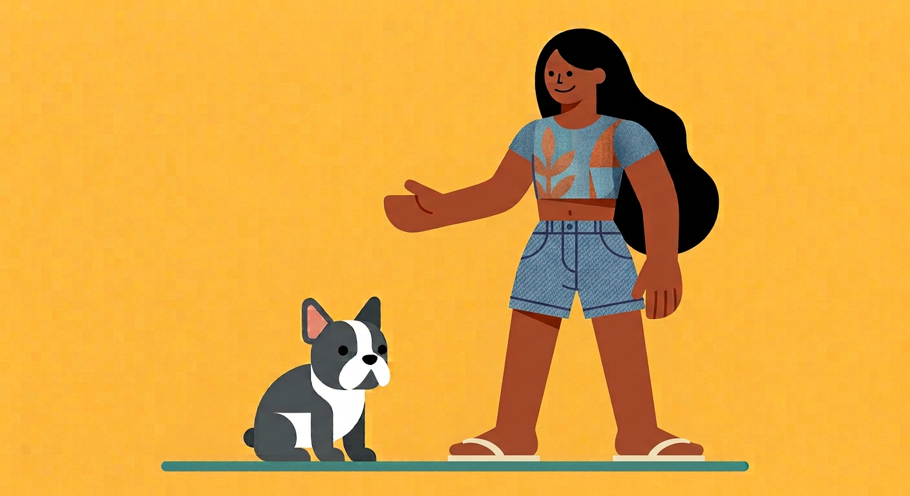

An Interactive Veterinary Story
Callie and Tay: a story about heat stroke in dogs.

Callie & Tay

This story is drawn for a wide screen. Holding your phone sideways gives every scene room, so the conversations and cards are easier to read.